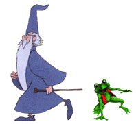

Selam, ben kurbaða. Daha doðrusu artIk kurbaða. Çünkü ben aslýnda bir Prensim. Her þey avlanmak için Mavi Elmas gölüne gittiðimde oldu.

Büyücü Hikmet'in sinirli bir gününe denk gelmiþ olacaðim ki hiç bir þey yapmamiþ olmama raðmen beni kurbaðaya çevirdi.